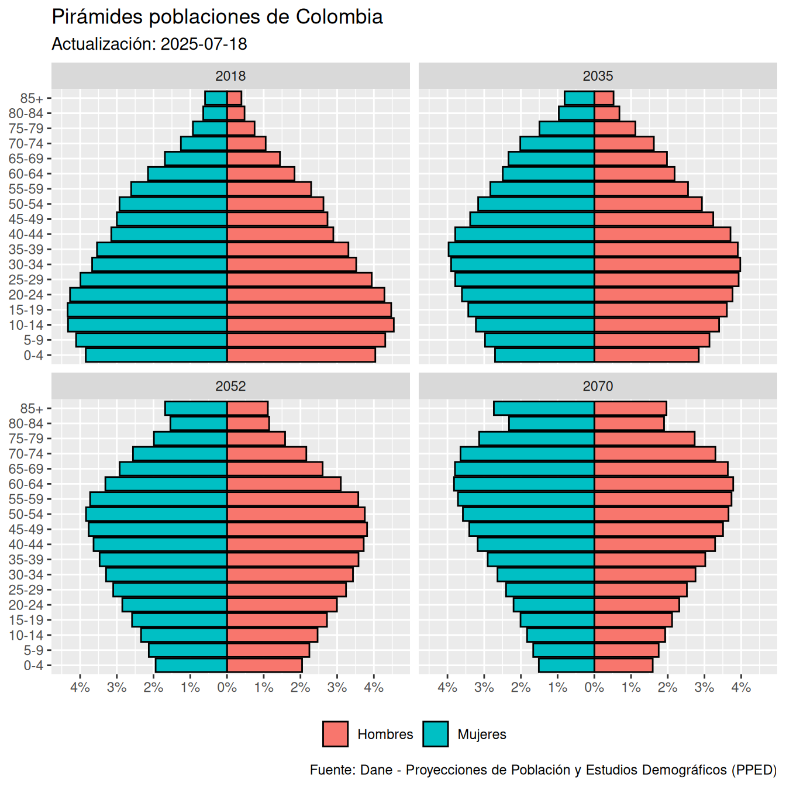

readxl, janitor, tidyr, ggplot2 y scales
Este capítulo se basa en (Wickham, 2023, Capítulo 5) así como en la documentación oficial de tidyr donde tiene como propósito introducir la forma de estructurar un conjuntos de datos en formato largo y ancho (en inglés longer y wider) mediante las funciones pivot_longer() y pivot_wider() utilizando el paquete tidyr e información de proyecciones y retroproyecciones de población nacional por área, sexo y edad para el periodo 2018-2070 de Colombia con base en el Censo Nacional de Población y Vivienda (CNPV) 2018.
Exploraremos los siguientes aspectos:
janitor?Para desarrollar el contenido de este capítulo es necesario que hayas guardado el archivo serie-nacional-de-poblacion_area-sexo-edad_2018-2070_2025-07-18.xlsx en la carpeta data, tal como se señaló en la Nota 14.1. En caso que no lo hayas hecho es necesario que lo descargues y lo incluyas dentro de la carpeta data:
También es necesario que instales el paquete janitor teniendo en cuenta la Sección 4.2, tal como se señala a continuación:
install.packages("janitor")En caso que hayas seguido estas indicaciones, procede a crear una nueva carpeta llamada 017_pivotear-datos-en-r y dentro de ella genera el archivo 001_pivotear.R, siguiendo las pautas de la Sección 4.4.
En el Capítulo 17 y en el Capítulo 18 ordenarás un conjunto de datos utilizando el paquete tidyr y utilizarás tanto la gramática de manipulación de datos (ver Sección 10.1) como la gramática de gráficos en capas (ver Sección 6.1) para realizar un gráfico de pirámides de población señalando la participación en la población por grupos etareos en Colombia para los años 2018, 2035, 2052 y 2070, tal como se indica en la Figura 17.1.

readxl, janitor, tidyr, ggplot2 y scales
El formato largo (en inglés longer format) reorganiza una tabla aumentando el número de filas y reduciendo el de columnas, un proceso frecuentemente denominado “alargar” los datos. Esta transformación se requiere cuando los nombres de ciertas columnas no corresponden a nombres de variables sino a valores o niveles específicos de una variable.
En el paquete tidyr, la función pivot_longer() permite transformar este tipo de tablas en una estructura ordenada mediante 3 parámetros principales:
cols: especifica el conjunto de columnas cuyos nombres representan valores y que deben reestructurarse.names_to: define el nombre de la nueva columna en la que se recopilarán los nombres de las columnas seleccionadas en cols.values_to: define el nombre de la nueva columna que incluirá los valores numéricos o caracteres almacenados en las celdas de las columnas seleccionadas.En la Figura 17.2 se ilustra conceptualmente la reestructuración realizada por la función pivot_longer().
![Diagrama conceptual que muestra cómo la función pivot_longer transforma una tabla de formato ancho a formato largo. A la izquierda se presenta una tabla de 2 filas con las columnas id, m_014 y f_014. Una flecha central con el comando pivot_longer especifica cols = m_014:f_014, names_to = 'name' y values_to = 'value'. A la derecha se genera una nueva tabla de 4 filas con las columnas id, name y value, donde las columnas m_014 y f_014 se han colapsado en filas y se ha duplicado el identificador id.](images/pivot_longer.png)
pivot_longer()
Tal como se observa en la Figura 17.2, la tabla inicial contiene 2 columnas (m_014 y f_014) asociadas a categorías demográficas de sexo y edad. Al aplicar pivot_longer(), los encabezados de estas 2 columnas pasan a formar parte de una única columna de categorías (name), mientras que los valores numéricos correspondientes (20, 15, 3 y 5) se recopilan en la columna value. Este proceso preserva el atributo identificador (id) duplicando sus filas según sea necesario para “alargar” la tabla de 2 a 4 filas.
La aplicación en código de la función pivot_longer() y su sintaxis básica fueron introducidas en el Capítulo 16 a través de conjuntos de datos como relig_income y billboard. En la Sección 17.4 aplicarás esta función en un escenario práctico de demografía nacional.
El formato ancho (en inglés wider format) corresponde a la operación inversa del formato largo, reorganizando una tabla al aumentar el número de columnas y disminuir el de filas, un proceso comúnmente llamado “ensanchar” los datos. Esta transformación resulta fundamental cuando una observación particular se encuentra fragmentada a lo largo de múltiples filas o cuando se desea preparar una matriz o tabla de presentación donde las categorías de una variable se exhiben como encabezados de columnas independientes.
En el paquete tidyr, la función pivot_wider() implementa esta reestructuración mediante 2 parámetros principales:
names_from: especifica la columna existente cuyos valores únicos se convertirán en los encabezados de las nuevas columnas.values_from: define la columna existente desde la cual se extraerán los valores de las celdas que poblarán las nuevas columnas generadas.En la Figura 17.3 se ilustra conceptualmente la reestructuración realizada por la función pivot_wider().
![Diagrama conceptual que muestra cómo la función pivot_wider transforma una tabla de formato largo a formato ancho. A la izquierda se presenta una tabla de 4 filas con columnas id, name y value. Una flecha central con el comando pivot_wider especifica names_from = name y values_from = value. A la derecha se genera una tabla compacta de 2 filas con las columnas id, m_014 y f_014, donde los valores de la columna name se han expandido en encabezados de columna y las celdas se han rellenado con los valores correspondientes.](images/pivot_wider.png)
pivot_wider()
Como se observa en la Figura 17.3, la tabla inicial contiene 4 observaciones distribuidas en las columnas id, name y value. Al ejecutar pivot_wider(), los valores diferenciados de la columna name (m_014 y f_014) se elevan a nuevos encabezados de columna y las celdas correspondientes se rellenan con los registros numéricos de value. De este modo, la tabla se consolida pasando de 4 filas a 2 filas agrupando los atributos de cada identificador id en una sola fila.
El uso de pivot_wider() en conjunto con pivot_longer() se exploró en el Capítulo 16 mediante el análisis de registros meteorológicos diarios en clima_muestra. Aunque en la gran mayoría de los análisis dentro del tidyverse se prefiere el formato largo para facilitar la manipulación y visualización, el formato ancho resulta idóneo para reportes tabulares finales o matrices.
El propósito de la Sección 17.4 es aplicar la limpieza de nombres y la transformación hacia formato largo mediante pivot_longer() partiendo de los datos oficiales de proyecciones y retroproyecciones de población nacional para Colombia elaborados por el Departamento Administrativo Nacional de Estadística (DANE) para el periodo 2018-2070.
El objetivo final de este caso de estudio es generar el archivo poblacion_col_2018_2070_largo.rds, el cual servirá como insumo fundamental para separar variables compuestas y preparar la visualización de pirámides poblacionales en el Capítulo 18.
Para desarrollar el caso de estudio, en primera instancia se cargan los paquetes readxl, janitor y tidyverse y lueog se importan los datos aplicando lo desarrollado en el Capítulo 14 con respecto al archivo serie-nacional-de-poblacion_area-sexo-edad_2018-2070_2025-07-18.xlsx, tal como se señala a continuación:
# Cargar paquetes ----
library(readxl)
library(janitor)
library(tidyverse)
# Importar datos ----
path <- "data/serie-nacional-de-poblacion_area-sexo-edad_2018-2070_2025-07-18.xlsx"
poblacion_col_2018_2070 <- read_excel(
path = path,
sheet = "PobNacionalxÁreaSexoEdad",
skip = 8
) |>
rename(
territorio = `...1`,
ano = `...2`,
area_geografica = `...3`
)Al inspeccionar el objeto importado poblacion_col_2018_2070 es posible observar la estructura inicial de la tabla, tal como se señala a continuación:
# Inspeccionar datos importados ----
poblacion_col_2018_2070# A tibble: 127 × 309
territorio ano area_geografica Total Hombres Mujeres
<chr> <dbl> <chr> <dbl> <dbl> <dbl>
1 Total Nacio… 2018 Cabecera 3.64e7 1.75e7 1.90e7
2 Total Nacio… 2018 Centros Poblad… 1.18e7 6.16e6 5.68e6
3 Total Nacio… 2018 Total 4.83e7 2.36e7 2.46e7
4 Total Nacio… 2019 Cabecera 3.72e7 1.78e7 1.94e7
5 Total Nacio… 2019 Centros Poblad… 1.20e7 6.27e6 5.78e6
6 Total Nacio… 2019 Total 4.93e7 2.41e7 2.51e7
7 Total Nacio… 2020 Cabecera 3.81e7 1.83e7 1.98e7
8 Total Nacio… 2020 Centros Poblad… 1.23e7 6.38e6 5.88e6
9 Total Nacio… 2020 Total 5.04e7 2.47e7 2.57e7
10 Total Nacio… 2021 Cabecera 3.87e7 1.86e7 2.01e7
# ℹ 117 more rows
# ℹ 303 more variables: `Hombres 0 años` <dbl>,
# `Hombres 1 año` <dbl>, `Hombres 2 años` <dbl>,
# `Hombres 3 años` <dbl>, `Hombres 4 años` <dbl>,
# `Hombres 5 años` <dbl>, `Hombres 6 años` <dbl>,
# `Hombres 7 años` <dbl>, `Hombres 8 años` <dbl>,
# `Hombres 9 años` <dbl>, `Hombres 10 años` <dbl>, …La tabla contiene 127 filas y múltiples columnas donde se combinan variables geográficas, temporales y columnas demográficas cuyos nombres contienen espacios, mayúsculas y caracteres especiales como por ejemplo `Hombres 0 años` o `Mujeres 100 años y más`.
Trabajar con nombres de columnas que contienen espacios o caracteres especiales en R exige escribir los nombres entre comillas invertidas, como por ejemplo `Hombres 0 años`. Este aspecto dificulta la escritura de código y puede generar errores tipográficos recurrentes.
Para resolver este inconveniente el paquete janitor provee la función clean_names(), la cual transforma de forma automatizada los encabezados de cualquier tabla a un estilo consistente en minúsculas y separado por guiones bajos conocido en inglés con el nombre de snake case. De esa manera se eliminan tildes y caracteres especiales, tal como se señala a continuación:
clean_names()
# Limpiar nombres ----
poblacion_col_2018_2070_limpiar_nombres <- poblacion_col_2018_2070 |>
clean_names()# Inspeccionar nombres limpios ----
poblacion_col_2018_2070_limpiar_nombres# A tibble: 127 × 309
territorio ano area_geografica total hombres mujeres
<chr> <dbl> <chr> <dbl> <dbl> <dbl>
1 Total Nacio… 2018 Cabecera 3.64e7 1.75e7 1.90e7
2 Total Nacio… 2018 Centros Poblad… 1.18e7 6.16e6 5.68e6
3 Total Nacio… 2018 Total 4.83e7 2.36e7 2.46e7
4 Total Nacio… 2019 Cabecera 3.72e7 1.78e7 1.94e7
5 Total Nacio… 2019 Centros Poblad… 1.20e7 6.27e6 5.78e6
6 Total Nacio… 2019 Total 4.93e7 2.41e7 2.51e7
7 Total Nacio… 2020 Cabecera 3.81e7 1.83e7 1.98e7
8 Total Nacio… 2020 Centros Poblad… 1.23e7 6.38e6 5.88e6
9 Total Nacio… 2020 Total 5.04e7 2.47e7 2.57e7
10 Total Nacio… 2021 Cabecera 3.87e7 1.86e7 2.01e7
# ℹ 117 more rows
# ℹ 303 more variables: hombres_0_anos <dbl>,
# hombres_1_ano <dbl>, hombres_2_anos <dbl>,
# hombres_3_anos <dbl>, hombres_4_anos <dbl>,
# hombres_5_anos <dbl>, hombres_6_anos <dbl>,
# hombres_7_anos <dbl>, hombres_8_anos <dbl>,
# hombres_9_anos <dbl>, hombres_10_anos <dbl>, …Al aplicar clean_names(), encabezados como `Hombres 0 años` y `Mujeres 100 años y más` se convierten de forma transparente en hombres_0_anos y mujeres_100_anos_y_mas facilitando su selección y manipulación en los pasos posteriores.
El conjunto de datos del DANE clasifica las proyecciones anuales según el área geográfica en 3 niveles: "Cabecera", "Centros Poblados y Rural Disperso" y "Total". Dado que el objetivo es analizar la estructura demográfica a nivel nacional, es necesario filtrar únicamente los registros correspondientes al total nacional.
Para lograr este aspecto, se utiliza la función filter() (ver Sección 10.1.1.1) sobre la columna area_geografica seleccionando el valor "Total", tal como se señala a continuación:
filter()
# Filtrar ----
poblacion_col_2018_2070_filtrar_total <- poblacion_col_2018_2070_limpiar_nombres |>
filter(
area_geografica == "Total"
)# Inspeccionar datos filtrados ----
poblacion_col_2018_2070_filtrar_total# A tibble: 53 × 309
territorio ano area_geografica total hombres mujeres
<chr> <dbl> <chr> <dbl> <dbl> <dbl>
1 Total Nacio… 2018 Total 4.83e7 2.36e7 2.46e7
2 Total Nacio… 2019 Total 4.93e7 2.41e7 2.51e7
3 Total Nacio… 2020 Total 5.04e7 2.47e7 2.57e7
4 Total Nacio… 2021 Total 5.11e7 2.50e7 2.61e7
5 Total Nacio… 2022 Total 5.16e7 2.53e7 2.63e7
6 Total Nacio… 2023 Total 5.21e7 2.55e7 2.66e7
7 Total Nacio… 2024 Total 5.26e7 2.58e7 2.68e7
8 Total Nacio… 2025 Total 5.31e7 2.60e7 2.71e7
9 Total Nacio… 2026 Total 5.34e7 2.62e7 2.72e7
10 Total Nacio… 2027 Total 5.37e7 2.63e7 2.74e7
# ℹ 43 more rows
# ℹ 303 more variables: hombres_0_anos <dbl>,
# hombres_1_ano <dbl>, hombres_2_anos <dbl>,
# hombres_3_anos <dbl>, hombres_4_anos <dbl>,
# hombres_5_anos <dbl>, hombres_6_anos <dbl>,
# hombres_7_anos <dbl>, hombres_8_anos <dbl>,
# hombres_9_anos <dbl>, hombres_10_anos <dbl>, …Mediante esta operación se reducen las observaciones a \(53\) filas, correspondientes a los \(53\) años comprendidos en el horizonte de proyección 2018 a 2070.
La tabla resultante contiene agregados globales (total, hombres y mujeres) así como totales por edad simple junto con las columnas desagregadas por sexo y edad simple desde hombres_0_anos hasta mujeres_100_anos_y_mas.
Para construir la pirámide poblacional en los capítulos posteriores, se requiere únicamente la variable temporal (ano), el total nacional (total) para calcular porcentajes poblacionales y las columnas que desglosan la población por sexo y edad. Para seleccionarlas eficientemente se utiliza la función select() junto con el operador de rango consecutivo : (ver Sección 10.2.3), tal como se señala a continuación:
select()
# Seleccionar ----
poblacion_col_2018_2070_seleccionar <- poblacion_col_2018_2070_filtrar_total |>
select(
ano,
total,
hombres_0_anos:mujeres_100_anos_y_mas
)# Inspeccionar variables seleccionadas ----
poblacion_col_2018_2070_seleccionar# A tibble: 53 × 204
ano total hombres_0_anos hombres_1_ano hombres_2_anos
<dbl> <dbl> <dbl> <dbl> <dbl>
1 2018 4.83e7 379611 384392 389812
2 2019 4.93e7 379692 386682 391193
3 2020 5.04e7 385600 388121 394740
4 2021 5.11e7 382677 389658 392098
5 2022 5.16e7 379263 384581 391602
6 2023 5.21e7 375915 380514 385906
7 2024 5.26e7 372539 377208 381864
8 2025 5.31e7 367902 373397 378139
9 2026 5.34e7 361692 367778 373403
10 2027 5.37e7 355501 361449 367664
# ℹ 43 more rows
# ℹ 199 more variables: hombres_3_anos <dbl>,
# hombres_4_anos <dbl>, hombres_5_anos <dbl>,
# hombres_6_anos <dbl>, hombres_7_anos <dbl>,
# hombres_8_anos <dbl>, hombres_9_anos <dbl>,
# hombres_10_anos <dbl>, hombres_11_anos <dbl>,
# hombres_12_anos <dbl>, hombres_13_anos <dbl>, …De esta forma, la tabla queda restringida a \(204\) columnas: ano, total y las \(202\) categorías demográficas individuales correspondientes a \(101\) para hombres y \(101\) para mujeres desde 0 hasta 100 años y más.
Aunque la tabla seleccionada contiene toda la información demográfica necesaria, no se encuentra en formato ordenado. Este aspecto se debe a que los encabezados desde hombres_0_anos hasta mujeres_100_anos_y_mas son en realidad valores de variables demográficas y no nombres de variables.
Para estructurar los datos en formato largo, se aplica la función pivot_longer():
cols = hombres_0_anos:mujeres_100_anos_y_mas: especifica el rango de variables que se colapsarán en filas.names_to = "genero_edad": define el nombre de la nueva columna que almacenará los nombres de las categorías.values_to = "poblacion": define el nombre de la nueva columna que contendrá el conteo de población respectivo.Este procedimiento se realiza tal como se señala a continuación:
pivot_longer()
# Tidy ----
poblacion_col_2018_2070_largo <- poblacion_col_2018_2070_seleccionar |>
pivot_longer(
cols = hombres_0_anos:mujeres_100_anos_y_mas,
names_to = "genero_edad",
values_to = "poblacion"
)# Inspeccionar datos en formato largo ----
poblacion_col_2018_2070_largo# A tibble: 10,706 × 4
ano total genero_edad poblacion
<dbl> <dbl> <chr> <dbl>
1 2018 48258494 hombres_0_anos 379611
2 2018 48258494 hombres_1_ano 384392
3 2018 48258494 hombres_2_anos 389812
4 2018 48258494 hombres_3_anos 395361
5 2018 48258494 hombres_4_anos 400077
6 2018 48258494 hombres_5_anos 405013
7 2018 48258494 hombres_6_anos 410040
8 2018 48258494 hombres_7_anos 415839
9 2018 48258494 hombres_8_anos 421676
10 2018 48258494 hombres_9_anos 427467
# ℹ 10,696 more rowsEl resultado es una tibble en formato largo de \(10706\) filas (\(53 \text{ años} \times 202 \text{ categorías demográficas}\)) y \(4\) columnas: ano, total, genero_edad y poblacion. En este punto, los datos se encuentran en formato largo y listos para proceder con la separación de la columna genero_edad en sus 2 componentes individuales (genero y edad) en el Capítulo 18.
Una vez estructurado el conjunto de datos en formato largo mediante la función pivot_longer(), es posible exportar el archivo y guardarlo en la carpeta data para utilizarlo posteriormente en el Capítulo 18, tal como se señala a continuación:
write_rds() para exportar y guardar el archivo de datos en formato largo
poblacion_col_2018_2070_largo |>
write_rds(
file = "data/poblacion_col_2018_2070_largo.rds"
)En el Listado 17.6 se utiliza la función write_rds() junto con el parámetro file asociado con el argumento "data/poblacion_col_2018_2070_largo.rds" para definir tanto la ruta como el nombre del archivo en el que se guardará la información en formato largo.